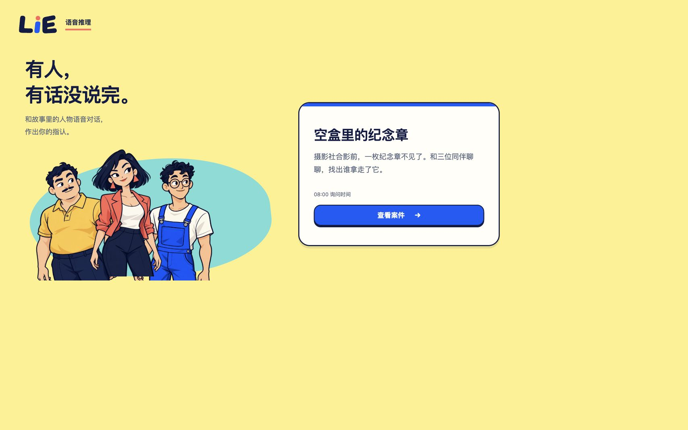
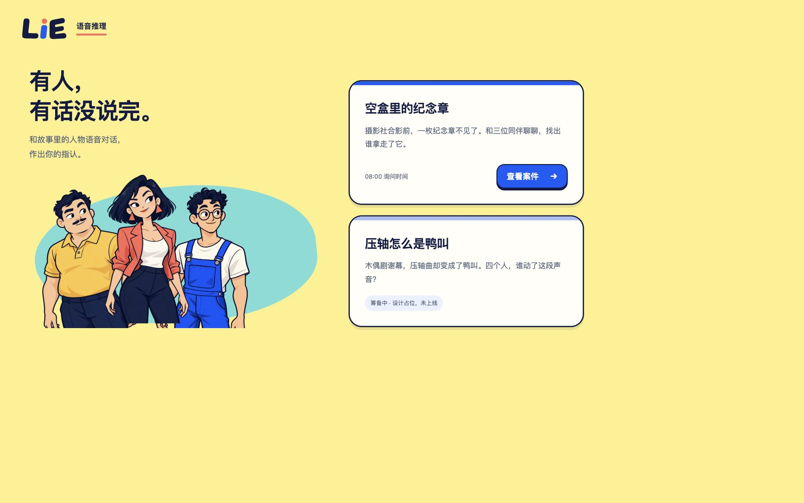
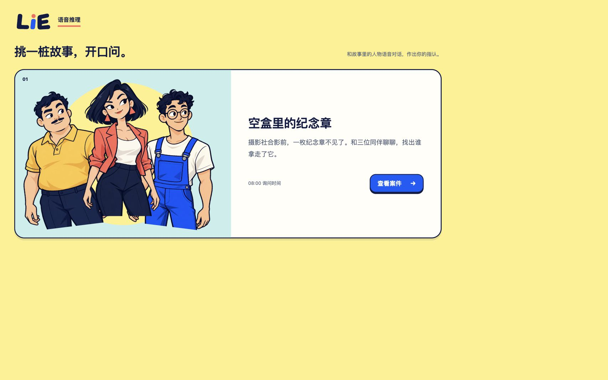
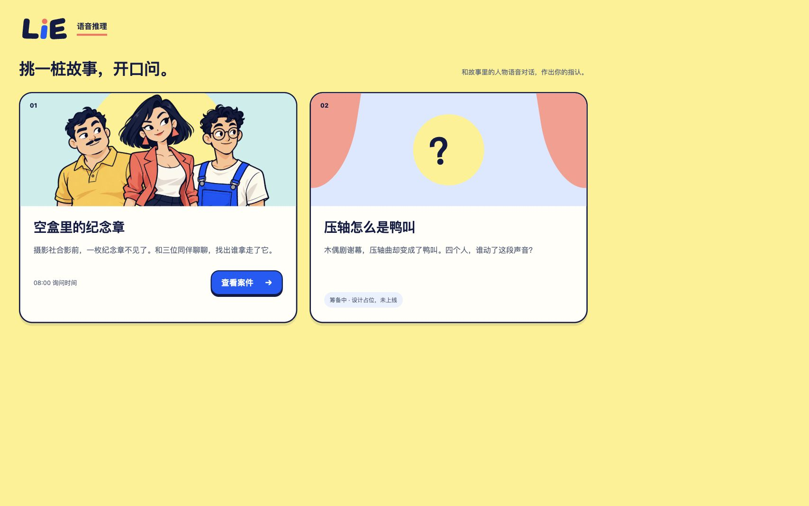

A · 角色邀请
左侧用人物与一句产品说明建立轻松气质，右侧突出案件入口。单案集中、双案纵向排列；更强调品牌与角色，案件变多时右侧列表需要继续扩展。


当前只有1案时

第2案只作筹备占位两版均为候选，尚未替换应用。分别验证只有1案和未来2案；第二案为未上线设计占位，不是正式可玩内容。
左侧用人物与一句产品说明建立轻松气质，右侧突出案件入口。单案集中、双案纵向排列；更强调品牌与角色，案件变多时右侧列表需要继续扩展。

当前只有1案时
第2案只作筹备占位让案件本身成为首页主视觉。单案为宽幅故事卡，双案自然分成两张封面卡，人物图归属于当前案件；进入动作明确，未来扩展更自然。

当前只有1案时
第2案只作筹备占位两版都保留首页→查看案件→接案→调查的既有流程；没有新增搜索、分类、账号、榜单、文字输入或新玩法。来源、实际尺寸与验证见 README。